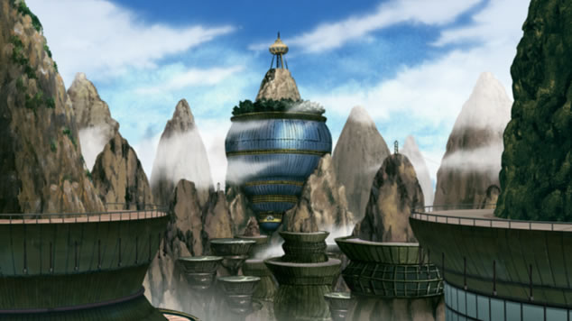

雷之國
目前在動漫中很少提及。根據《兵之書》，該國有高聳入雲的山峰，迴旋著震耳欲聾的雷聲，因此得名。中央山脈上的河流在入海口處製造出曲折的海岸線。國內還有很多溫泉地區。雷之國的忍者村是雲忍者村
雲忍者村
是屬於雷之國的忍者村，忍者五大國之一，首領被稱為雷影。忍者村為於高山之上，在忍界大戰時曾經與木葉忍者村交鋒，後來和談時又爆發奪取白眼事件，因此雖然兩造還是講和了，關係依然相當疏離。忍者服裝為白色一邊露肩，類似防彈衣。 雲忍者村擁有二尾貓妖的祭品之力柚木斗及八尾牛鬼的祭品之力殺人蜂（雷影的弟弟）。但柚木斗被曉的飛段及角都所擊敗擒拿，尾獸抽離死亡。殺人蜂則是被鷹捕捉，不過捉到的是替身，脫離雲忍者村去當演歌手，之後遇上「鬼鮫」，被其擊敗，但雷影趕來救援，擊敗白絕分身所變成的鬼鮫。在第四次忍戰時領導著由五大國忍者和鐵之國武士組成的忍界聯軍。
